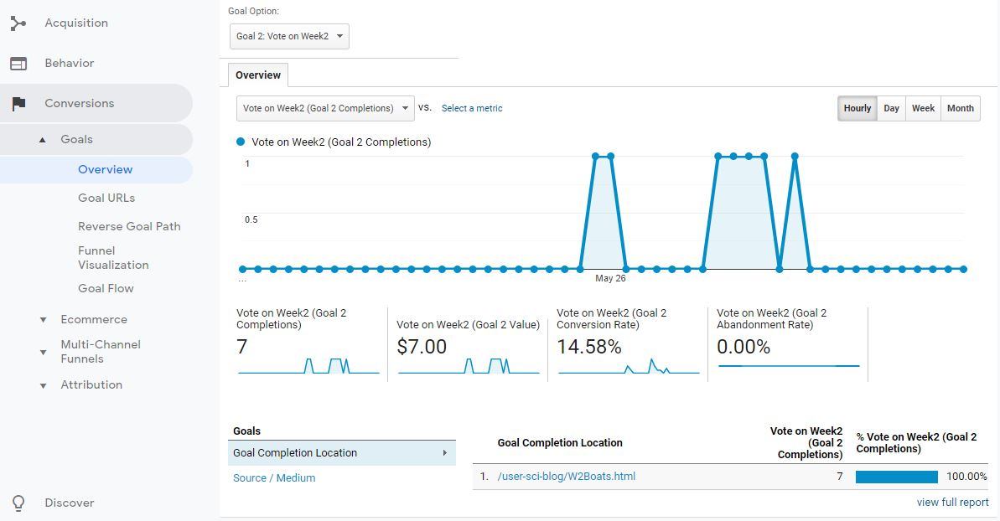
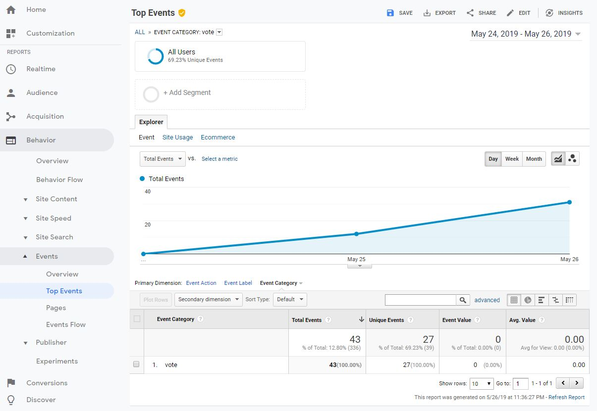
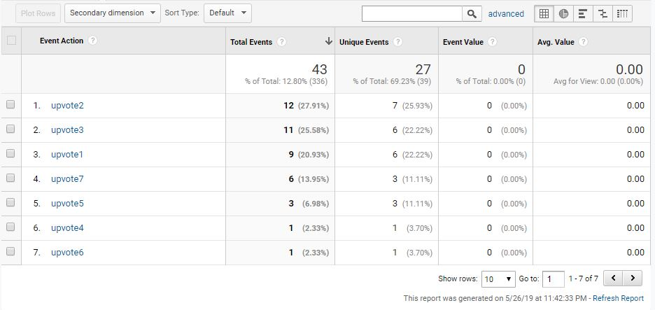

Tracking Goals and Events
As I continue to look at how developers can use analytics to understand their users I may ask myself, how does this help my company? The massive influx of data we receive on our user base can be good feedback but may be hard to see changes. This is where the Goals feature of Google Analytics comes in. We can set a company goal to track when certain events happen on our website. The data gathered can be tracked as conversions letting us know if what we want to happen is.
To test this I set up a simple task that a company might run on my site, a review. It took me a while to implement it correctly but on every article there is now a thumbs up button. When a user clicks on it a simple message pops up saying thanks and a event is triggered in Google Analytics. My favorite article is week 2 and I wanted more people to think so too. My goal was then to track how many people ‘liked’ week 2 in comparison to the others. To encourage this I announced my intentions at work as well as making a social media post.
Blitzkrieg Marketing
The results were what I expected for the most part. Initially I made a test goal which revealed some enlightening yet ultimately moot data. GA can track where a user came from but not past that meaning that visits from a VPN count as that country. I also forgot to give feedback on the button initially leading to people clicking it multiple times which triggered multiple events. The user that discovered this managed to generate over 200 pings worldwide when testing GA!
 The events that triggered on a button push numbered by weekThe actually trackable data did make it clear that my lightning marketing campaign worked. I had 43 events in total with 27 of them being unique. Out of those week 2 was the most popular but it was also quickly followed by week 3 to my suprise. This meant that I got most people to agree with me but If I had a larger data set another article might have been the most popular. In a real world scenario it might be better to set a weaker article as my goal to balance out the user base cutting down on my bounce rate.
Give a Thumbs up if you liked the article!